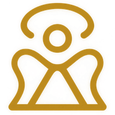
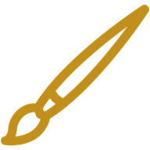
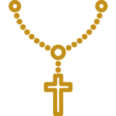
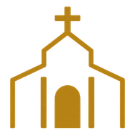
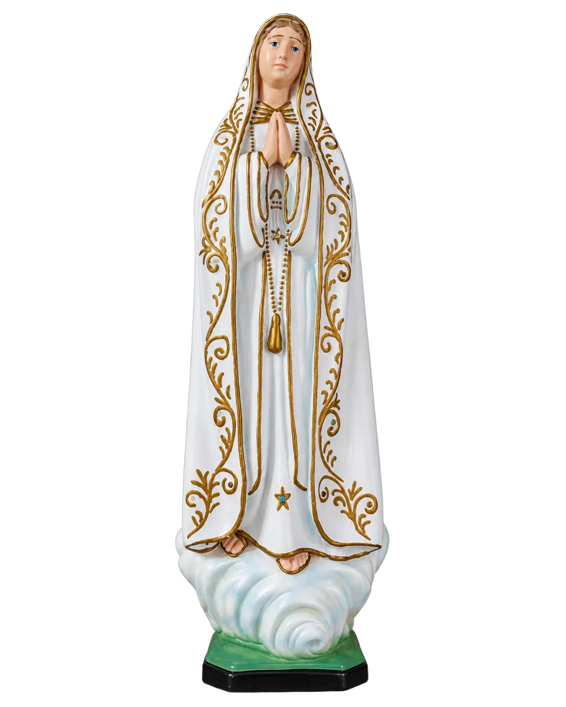
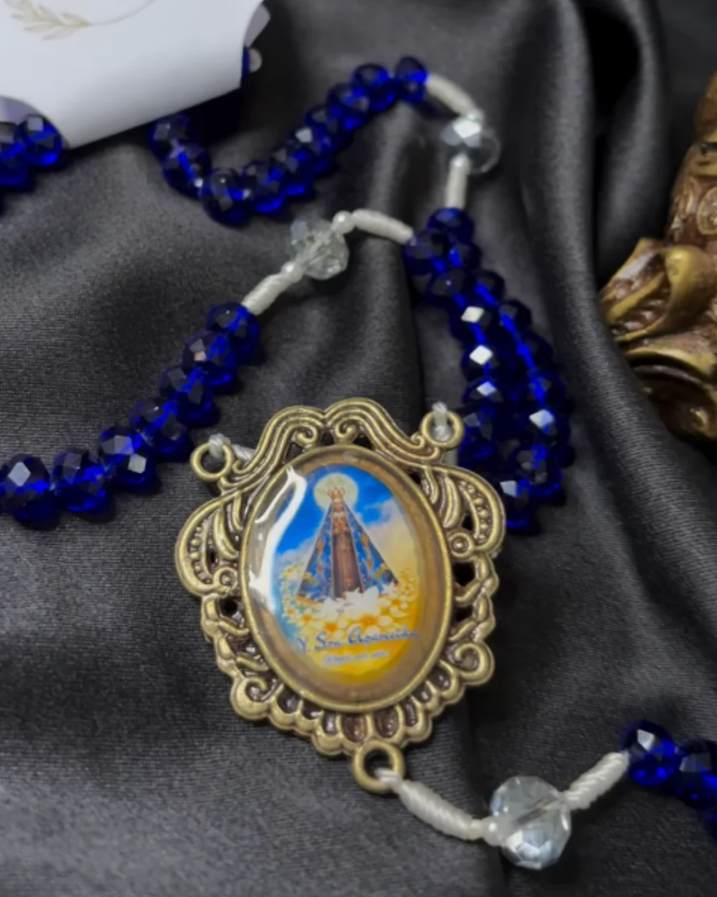
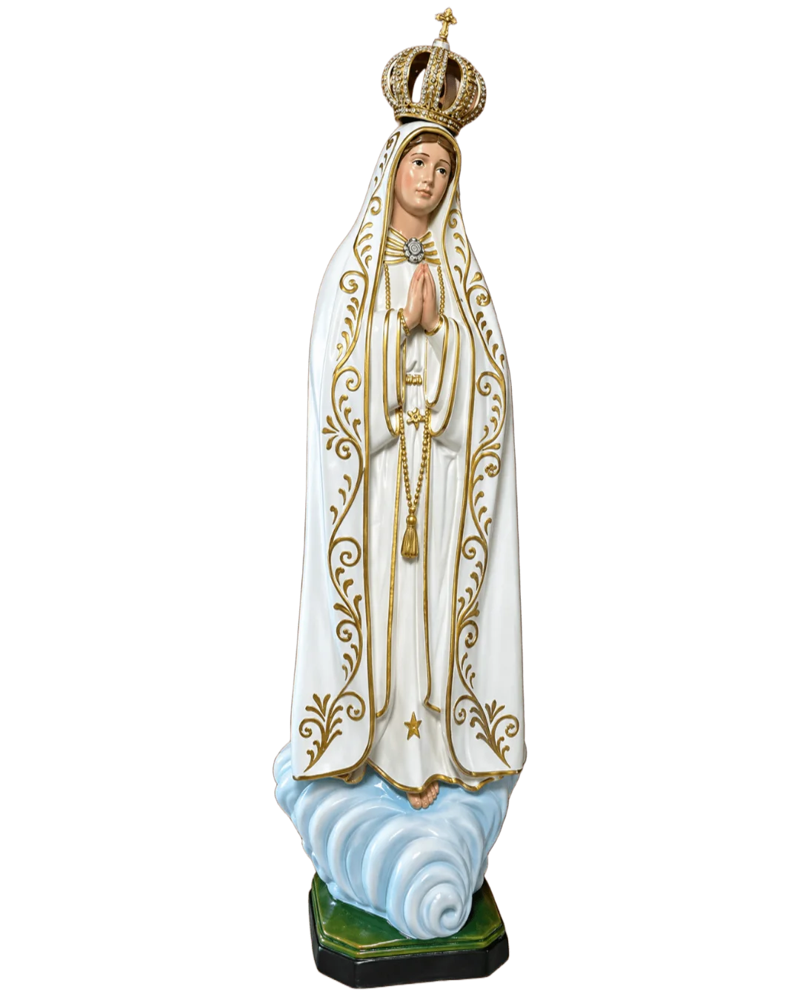
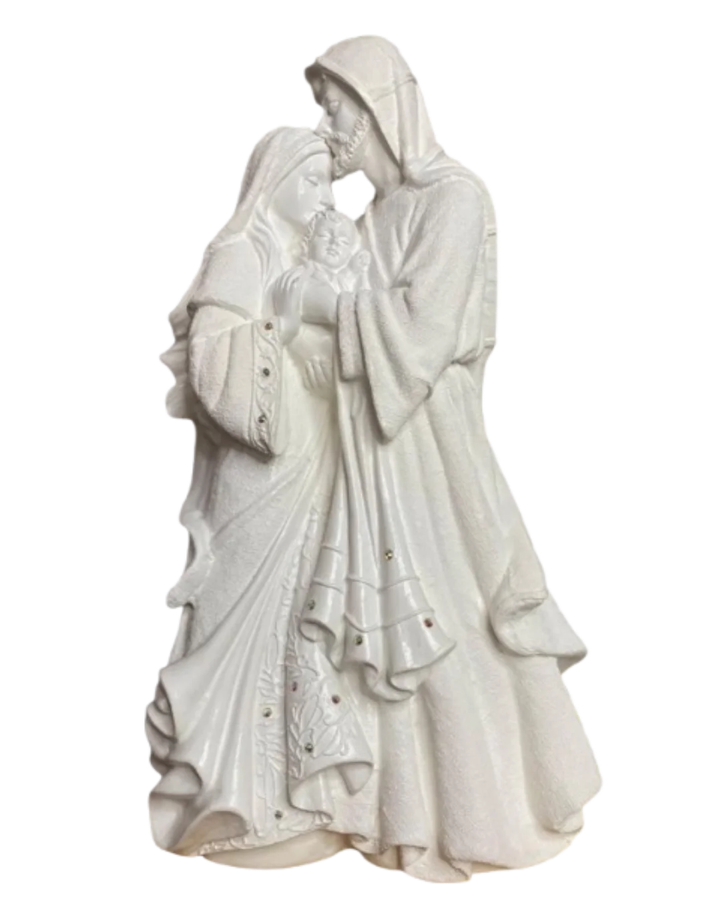
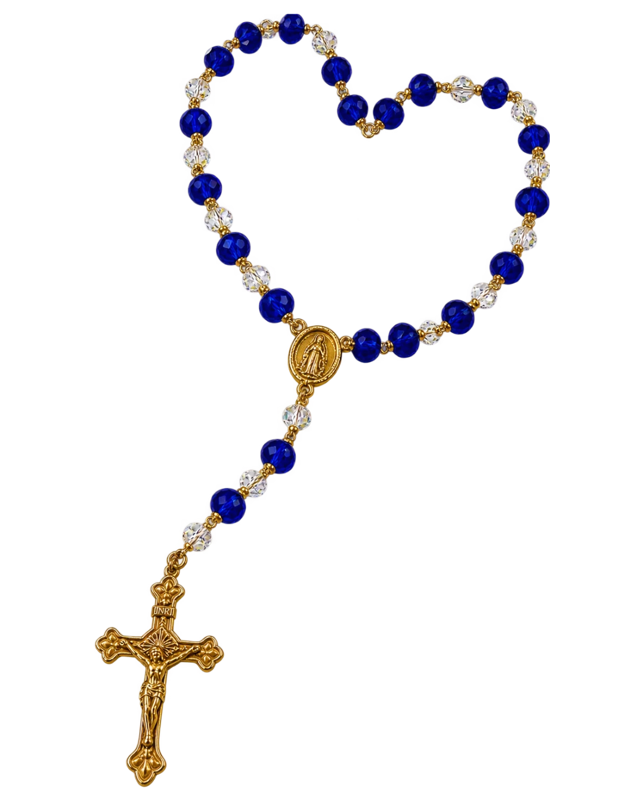

Bendito És
Restauração e personalização de peças religiosas
Devolvemos vida às histórias que atravessam gerações, com respeito, técnica e muito amor pela fé.
Sobre o ateliê
Há anos, chegam às mãos do ateliê imagens, terços e objetos de fé que já viveram histórias inteiras dentro de uma casa. Peças gastas pelo tempo, quebradas no transporte, ou apenas esperando um retoque para voltar a ocupar seu lugar no altar.
O trabalho é feito com calma, uma peça de cada vez. Não existe produção em série: cada restauração e cada detalhe pintado à mão respeitam tanto a peça que chegou quanto a pessoa que vai recebê-la de volta.
O atendimento acontece em São Bento e em Catolé do Rocha, na Paraíba, sempre combinado pelo Instagram — com fotos, conversa direta e definição de prazo e valores antes de qualquer trabalho começar.
O que é feito no ateliê
Quatro frentes de trabalho, sempre artesanais.

Restauração de peças religiosas
Imagens, crucifixos e objetos antigos ganham reparo cuidadoso, sem perder as características originais da peça.

Personalização
Nomes, datas e pequenos detalhes que transformam uma peça pronta em algo feito especialmente para quem vai recebê-la.

Artesanato sacro feito à mão
Terços, quadros e outros objetos de devoção, produzidos do início ao fim dentro do ateliê.

Peças para datas especiais
Encomendas para batizado, primeira comunhão, casamento e outras celebrações de família.
Um pouco do que já saiu do ateliê
Registros de peças restauradas e personalizadas ao longo do tempo.





Antes e depois das restaurações
A transformação de cada peça, passo a passo.
Como funciona um pedido
-
Conte o que você precisa
Envie fotos da peça ou descreva o que você imagina, direto pelo Instagram.
-
Combine prazo e valor
O pedido é avaliado com calma, e você recebe o que é possível fazer, o prazo e o valor.
-
Acompanhe até a entrega
Cada peça é feita à mão, com atualizações até estar pronta para retirada ou envio.
Fale com o ateliê
O primeiro contato é sempre pelo Instagram. Conte um pouco do que você precisa e a resposta vem direto por lá.